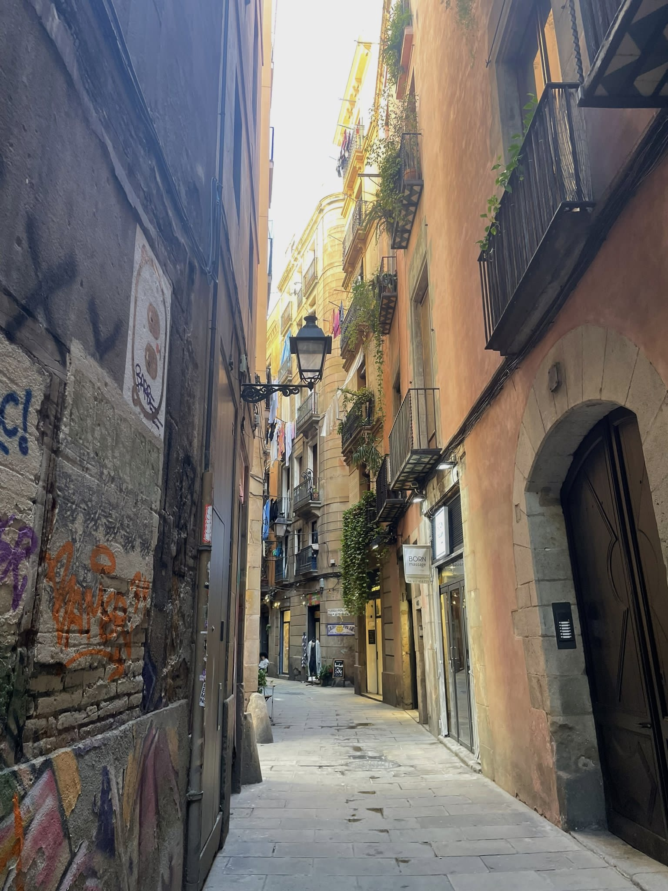
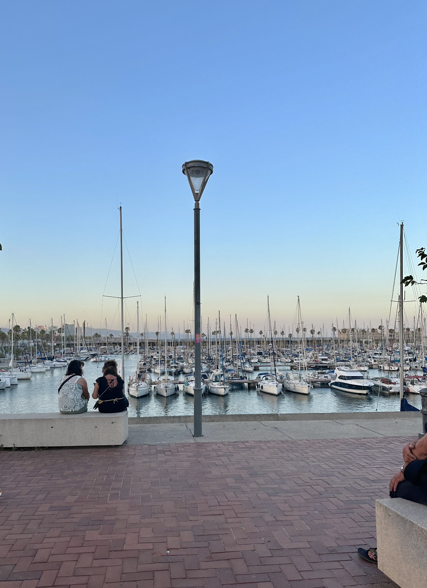

Welkom op mijn website over Barcelona! Hier deel ik informatie en tips over de plekken die ik heb bezocht.



Barcelona is de op een na grootste stad van Spanje. Barcelona heeft 1.636.732 inwoners en een oppervlakte van 101,4 km². Barcelona is onder nederlandse toeristen al jarenlang de populairste stad op het iberische schiereiland.
Waar ligt Barcelona in Spanje?
Barcelona ligt in het noordoosten van Spanje, in de regio Catalonië. Barcelona ligt aan de Middellandse Zee en heeft een belangrijke haven. Ook heeft Barcelona een mooi strand van vier kilometer om te zwemmen en te zonnen. Het strand loopt van de Noordelijke wijk Barceloneta richting het Zuidelijke Badalona.
Hoe het weer in Barcelona?
Barcelona heeft lange zomers en milde winters. In de zomer kunnen vooral de nachten erg warm zijn, met temperaturen van 20° C en ver daarboven. In maart starten deze dagen met temperaturen boven de 20° C, en kunnen aanhouden tot het einde van november. De warmste maanden zijn juli en augustus, wanneer het regelmatig warmer is dan 30 graden.
Welke taal spreken ze in Barcelona?
De officiele talen zijn Catalaans en Spaans, maar de meeste mensen in Barcelona spreken ook goed Engels.